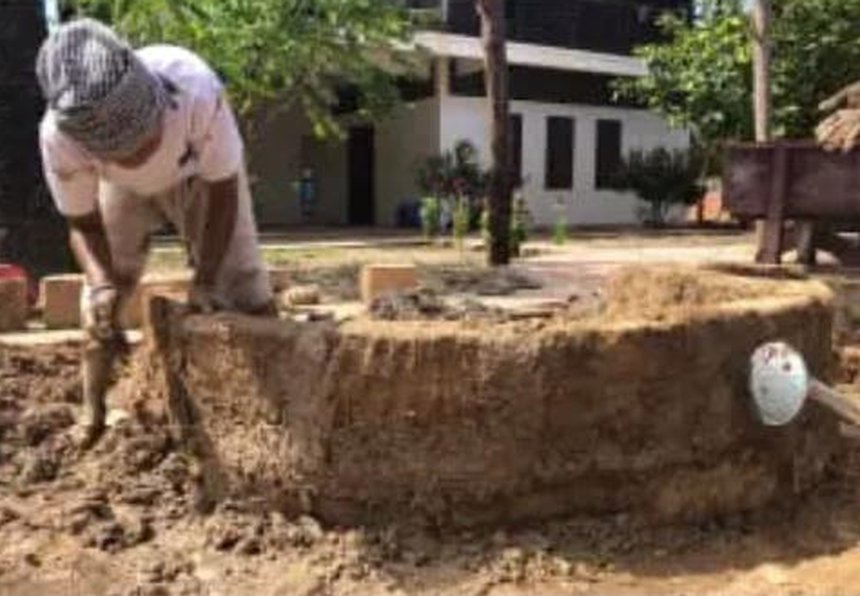
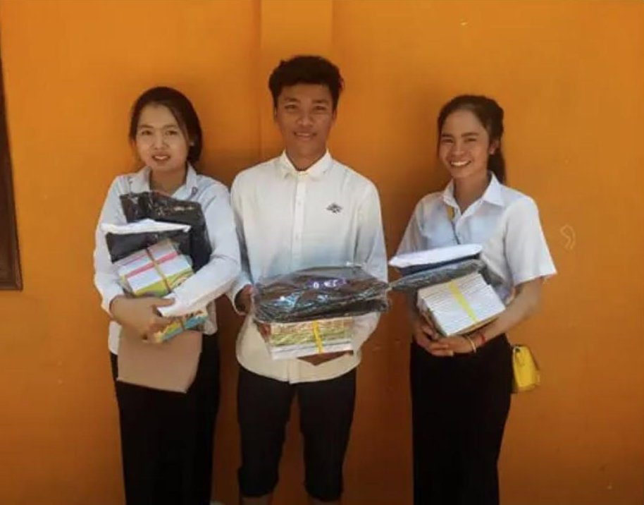

Rebuilding & Supporting Small Schools
Across Cambodia, Vietnam and Myanmar, small community-run schools keep children in class where no public system reaches. Entraide Asia helps them stay open.

A single small school can be the only school for miles
In rural Cambodia and parts of Vietnam and Myanmar, the nearest public school can be an hour's walk away, or simply too expensive for a family to keep a child enrolled. Small, locally-run schools fill that gap — often started by a single teacher, a monk, or a community association with almost no outside funding.
These schools rarely fail because of bad teaching. They fail because a roof leaks, a well runs dry, or there isn't enough money to pay a second teacher. Entraide Asia's role is to catch those problems before they force a school to turn children away.
What keeping a small school open actually looks like
Facilities & Repairs
Funding for basic construction and repair work — classrooms, latrines, wells and water tanks — so a school can legally and safely stay open.
Daily Operating Costs
Covering the unglamorous recurring costs — electricity, cleaning supplies, small maintenance — that a community-run school can't always absorb on its own.
Staffing Support
Contributing toward teacher and staff salaries so a school can keep experienced teachers instead of losing them to better-paid work elsewhere.
Direct, On-the-Ground Visits
Christophe visits the schools Entraide Asia supports in person, meeting staff and checking that funding is reaching the classroom rather than being spent from a distance.

Facility work in progress at Bayon School, Cambodia — the kind of practical, unglamorous project this cause funds.
Bayon School, Cambodia
Near Siem Reap, Bayon School has grown from a single makeshift classroom in the early 1990s into a school reaching roughly 550 children, students and family members a year. It's staffed almost entirely by local employees, with support from Entraide Asia going toward tuition, books and daily living costs for secondary students — the layer of support that keeps a small school's doors open long after the founding effort has moved on.
See the Full Story →
Small, direct funding — kept simple on purpose
Entraide Asia doesn't run these schools; it supports the local staff and associations that already do. Funding is personally directed by our founder Christophe, based on visits to each school rather than remote reporting, and goes toward whatever keeps the doors open that year — a repair, a teacher's salary, or a term's worth of supplies.